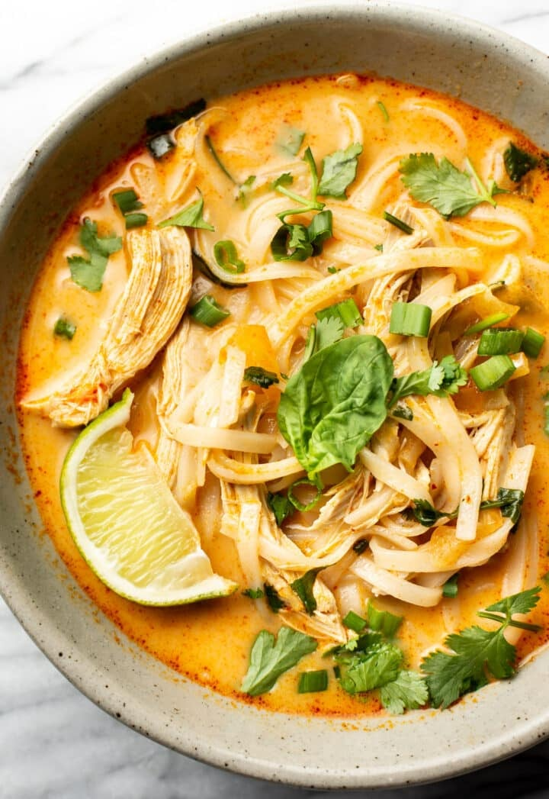

Thai Chicken Curry Soup

This soup is quick, simple, comforting, and full of fabulous flavor.
This chicken curry soup has gorgeous Thai-inspired flavors. We've got freshly grated ginger, lime juice, red curry paste, coconut milk, and fresh herbs among other irresistible ingredients. All of them are readily available for this quick Thai soup that's bursting with flavor.
Ingredients
- 1 tablespoon olive oil
- 1/2 medium onion chopped finely
- 1 teaspoon grated fresh ginger
- 3 cloves garlic minced
- 4 heaping tablespoons Thai red curry paste
- 4 cups chicken or vegetable broth
- 2 cups water
- Juice of 1 lime
- 3.5 ounces rice noodles
- 1 (13.5 ounce) can full fat coconut milk
- 2 cups cooked chicken
- Generous handful fresh basil torn
- Handful fresh cilantro chopped
- Chopped scallions to taste
- Salt & pepper to taste
- Lime wedges for serving (optional)
Steps
- Add the olive oil and onion to a large pot over medium-high heat. Sauté for 5 minutes, stirring occasionally.
- Stir in the ginger, garlic, and curry paste, and cook for about 30 seconds.
- Add the broth, water, lime juice, and noodles. Increase heat to high and bring to a gentle boil.
- Stir in the coconut milk and chicken. Reduce heat to medium-low and let the soup simmer for 10 minutes.
- Stir in the basil, cilantro, and scallions. Season with salt & pepper as needed.
- Serve immediately with an extra wedge of lime on the side if desired. The noodles will soak up more liquid the longer you leave the soup. I suggest adding more chicken broth if you need to add more liquid (e.g. reheating leftovers the next day).